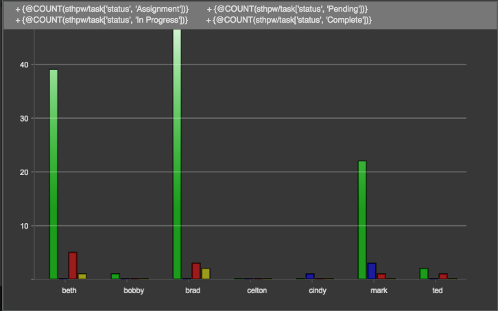

SObjectChartWdg
Description
The SObjectChartWdg is a tool to chart data related to sObjects.
Info
Name | SObjectChartWdg |
Class | tactic.ui.chart.SObjectChartWdg |
TACTIC Version Support | 4.4.0+ |
Required database columns | none |

Implementation
The SObjectChartWdg is driven by input sObjects and y-axis elements, where the y-axis elements are expressions or columns that each input sObject will evaluated against.
The input sObjects can be specified with the options "expression", "search_type", or "search_keys". Expression will override search_type, and search_type will override search_keys.
For example,
expression = "@SOBJECT(sthpw/login['login', 'NEQ', 'admin'])" search_type = "sthpw/login" search_keys = ['sthpw/login?code=brad']
A single y-axis can be specified with option "y_axis", or multiple elements can be specified with option "elements" as a "|" separated list. Individual y-axis elements can be a TACTIC expression enclosed in "{" and "}" or a predefined column for the search_type.
For example,
y_axis = "{@COUNT(sthpw/task['status', 'Assignment'])}"
elements = "num_assignment|num_pending|num_completed"The y-axis elements will be displayed side by side for each sObject, and x-axis label is specified through the option "x_axis".
Options
chart_type | Defines the type of chart that will be displayed for all y-axis elements. Can be line, bar, or area. Defaults to bar. |
chart_types | Defines the type of chart that will be displayed corresponding to each y-axis element. |
title | Title to display in chart. Note: The legend will cover the title. |
width | The pixel width of the chart. Defaults to 800. |
height | The pixel height of the chart. Defaults to 500. |
x_axis | The x-axis element label. This should be a column of the inputs sObjects. Defaults to code. |
y_axis | The y-axis element. This should be a column or expression of the input sObjects. |
elements | y-axis elements separated by a "|". |
expression | TACTIC expression which specifies sObjects for charting. |
search_type | Search type which specifies sObjects for charting. |
search_keys | Search keys of sObjects for charting. |